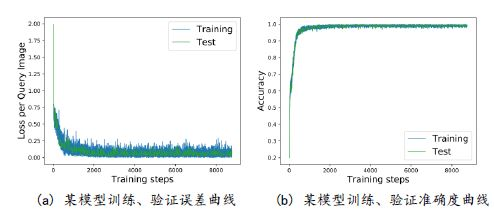
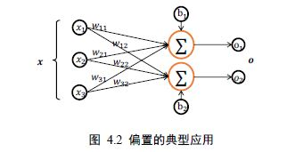
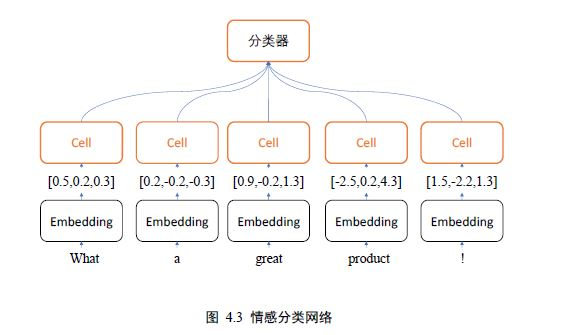
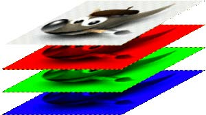
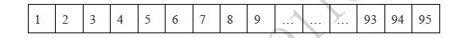

TensorFlow 是一个面向于深度学习算法的科学计算库，内部数据保存在张量(Tensor)对象上，所有的运算操作(Operation, OP)也都是基于张量对象进行。复杂的神经网络算法本质上就是各种张量相乘、相加等基本运算操作的组合，在深入学习深度学习算法之前，熟练掌握TensorFlow 张量的基础操作方法十分重要。
数据类型
TensorFlow 中的基本数据类型包含了数值型、字符串型和布尔型。
数值类型
数值类型的张量是TensorFlow 的主要数据载体，分为标量、向量、矩阵与张量。在 TensorFlow 中间，为了表达方便，一般把标量、向量、矩阵也统称为张量，不作区分，需要根据张量的维度数和形状自行判断。
首先来看向量在TensorFlow 是如何创建的：
1 | a = tf.constant(1.2) # 创建标量 |
另外常用的x.shape看维度信息，很像numpy；x.numpy()得到Numpy的array，很像PyTorch。
字符串类型
除了丰富的数值类型外，TensorFlow 还支持字符串(String)类型的数据，例如在表示图片数据时，可以先记录图片的路径，再通过预处理函数根据路径读取图片张量。
通过传入字符串对象即可创建字符串类型的张量：
1 | a = tf.constant('Hello, Deep Learning.') |
在tf.strings 模块中，提供了常见的字符串型的工具函数，如拼接join()，长度length()，切分split()等等。
布尔类型
为了方便表达比较运算操作的结果，TensorFlow 还支持布尔类型(Boolean, bool)的张量。布尔类型的张量只需要传入Python 语言的布尔类型数据，转换成TensorFlow 内部布尔型即可。需要注意的是，TensorFlow 的布尔类型和Python 语言的布尔类型并不对等，不能通用：
1 | a = tf.constant(True) # 创建布尔张量 |
数值精度
对于数值类型的张量，可以保持为不同字节长度的精度，如浮点数3.14 既可以保存为16-bit 长度，也可以保存为32-bit 甚至64-bit 的精度。Bit 位越长，精度越高，同时占用的内存空间也就越大。常用的精度类型有tf.int16, tf.int32, tf.int64, tf.float16, tf.float32,tf.float64，其中tf.float64 即为tf.double。在创建张量时，可以指定张量的保存精度：
1 | tf.constant(123456789, dtype=tf.int32) |
对于大部分深度学习算法，一般使用tf.int32, tf.float32 可满足运算精度要求，部分对精度要求较高的算法，如强化学习，可以选择使用tf.int64, tf.float64 精度保存张量。
通过访问张量的dtype 成员属性可以判断张量的保存精度：a.dtype
也可以通过tf的原生函数cast做类型转换a= tf.cast(a,tf.float32)
待优化张量
为了区分需要计算梯度信息的张量与不需要计算梯度信息的张量，TensorFlow 增加了一种专门的数据类型来支持梯度信息的记录：tf.Variable。tf.Variable 类型在普通的张量类型基础上添加了name，trainable 等属性来支持计算图的构建。由于梯度运算会消耗大量的计算资源，而且会自动更新相关参数，对于不需要的优化的张量，如神经网络的输入X，不需要通过tf.Variable 封装；相反，对于需要计算梯度并优化的张量，如神经网络层的W和𝒃，需要通过tf.Variable 包裹以便TensorFlow 跟踪相关梯度信息。
通过 tf.Variable()函数可以将普通张量转换为待优化张量：
1 | a = tf.constant([-1, 0, 1, 2]) |
其中张量的name 和trainable 属性是Variable 特有的属性，name 属性用于命名计算图中的变量，这套命名体系是TensorFlow 内部维护的，一般不需要用户关注name 属性；trainable表征当前张量是否需要被优化，创建Variable 对象是默认启用优化标志，可以设置trainable=False 来设置张量不需要优化。
除了通过普通张量方式创建Variable，也可以直接创建：
a = tf.Variable([[1,2],[3,4]])
待优化张量可看做普通张量的特殊类型，普通张量也可以通过GradientTape.watch()方法临时加入跟踪梯度信息的列表。
创建张量
在TensorFlow中，可以通过多种方式创建张量，如从Python List 对象创建，从Numpy 数组创建，或者创建采样自某种已知分布的张量等。
从Numpy,List对象创建
Numpy Array 数组和Python List 是Python 程序中间非常重要的数据载体容器，很多数据都是通过Python 语言将数据加载至Array 或者List 容器，再转换到Tensor 类型，通过TensorFlow 运算处理后导出到Array 或者List 容器，方便其他模块调用。
通过 tf.convert_to_tensor 可以创建新Tensor，并将保存在Python List 对象或者Numpy Array 对象中的数据导入到新Tensor 中：
1 | In [22]: |
需要注意的是，Numpy 中浮点数数组默认使用64-Bit 精度保存数据，转换到Tensor 类型时精度为tf.float64，可以在需要的时候转换为tf.float32 类型。
实际上，tf.constant()和tf.convert_to_tensor()都能够自动的把Numpy 数组或者Python List 数据类型转化为Tensor 类型，这两个API 命名来自TensorFlow 1.x 的命名习惯，在TensorFlow 2 中函数的名字并不是很贴切，使用其一即可。
创建全0，全1向量
将张量创建为全0 或者全1 数据是非常常见的张量初始化手段。考虑线性变换𝒚 = 𝑊𝒙 + 𝒃，将权值矩阵W 初始化为全1 矩阵，偏置b 初始化为全0 向量，此时线性变化层输出𝒚 = 𝒙，是一种比较好的层初始化状态。通过tf.zeros()和tf.ones()即可创建任意形状全0 或全1 的张量。例如，创建为0 和为1 的标量张量：
1 | tf.zeros([]), tf.ones([]) # 创建全0全1标量 |
通过tf.zeros_like, tf.ones_like 可以方便地新建与某个张量shape 一致，内容全0 或全1的张量。例如，创建与张量a 形状一样的全0 张量：
1 | In [28]: |
tf.*_like 是一个便捷函数，可以通过tf.zeros(a.shape)等方式实现。
创建自定义数值张量
除了初始化为全0，或全1 的张量之外，有时也需要全部初始化为某个自定义数值的张量，比如将张量的数值全部初始化为-1 等。
通过 tf.fill(shape, value)可以创建全为自定义数值value 的张量。例如，创建元素为-1的标量：
1 | In [32]: |
创建已知分布的张量
正态分布(Normal Distribution，或Gaussian Distribution)和均匀分布(Uniform Distribution)是最常见的分布之一，创建采样自这2种分布的张量非常有用，比如在卷积神经网络中，卷积核张量W 初始化为正态分布有利于网络的训练；在对抗生成网络中，隐藏变量z 一般采样自均匀分布。
通过 tf.random.normal(shape, mean=0.0, stddev=1.0)可以创建形状为shape，均值为mean，标准差为stddev的正态分布𝒩(𝑚𝑒𝑎𝑛, 𝑠𝑡𝑑𝑑𝑒𝑣^2)。例如，创建均值为0，标准差为1的正太分布：
1 | In [33]: |
创建均值为1，标准差为2 的正太分布：
1 | In [34]: |
通过tf.random.uniform(shape, minval=0, maxval=1, dtype=tf.float32)可以创建采样自[𝑚𝑖𝑛𝑣𝑎𝑙, 𝑚𝑎𝑥𝑣𝑎𝑙]区间的均匀分布的张量。例如创建采样自区间[0,1]，shape 为[2,2]的矩阵：
1 | In [35]: tf.random.uniform([2,2]) |
创建采样自区间[0,10]，shape 为[2,2]的矩阵：
1 | In [36]: |
如果需要均匀采样整形类型的数据，必须指定采样区间的最大值maxval 参数，同时制定数据类型为tf.int*型。
创建序列
在循环计算或者对张量进行索引时，经常需要创建一段连续的整形序列，可以通过tf.range()函数实现。tf.range(limit, delta=1)可以创建[0, 𝑙𝑖𝑚𝑖𝑡)之间，步长为delta 的整形序列，不包含limit 本身。例如，创建0~9，步长为1 的整形序列。和python原生的range函数一样用法。
张量的典型应用
在介绍完张量的相关属性和创建方式后，我们将介绍每种维度下张量的典型应用，让读者在看到每种张量时，能够直观地联想到它主要的物理意义和用途，对后续张量的维度变换等一系列抽象操作的学习打下基础。
本节在介绍典型应用时不可避免地会提及后续将要学习的网络模型或算法，学习时不需要完全理解，有初步印象即可。
标量
在 TensorFlow 中，标量最容易理解，它就是一个简单的数字，维度数为0，shape 为[]。标量的典型用途之一是误差值的表示、各种测量指标的表示，比如准确度(Accuracy, acc)，精度(Precision)和召回率(Recall)等。
考虑某个模型的训练曲线，如图 4.1 所示，横坐标为训练Batch 步数Step，纵坐标分别为误差变化趋势(图 4.1(a))和准确度变化趋势曲线(图 4.1(b))，其中损失值loss 和准确度均由张量计算产生，类型为标量。
以均方差误差函数为例，经过tf.keras.losses.mse(或tf.keras.losses.MSE)返回每个样本上的误差值，最后取误差的均值作为当前batch 的误差，它是一个标量：
1 | out = tf.random.uniform([4,10]) #随机模拟网络输出 |
向量
向量是一种非常常见的数据载体，如在全连接层和卷积神经网络层中，偏置张量𝒃就使用向量来表示。如图 4.2 所示，每个全连接层的输出节点都添加了一个偏置值，把所有输出节点的偏置表示成向量形式：𝒃 = [𝑏1, 𝑏2]𝑇。
考虑 2 个输出节点的网络层，我们创建长度为2 的偏置向量𝒃，并累加在每个输出节点上：
1 | # z=wx,模拟获得激活函数的输入z |
注意到这里shape 为[4,2]的𝒛和shape 为[2]的𝒃张量可以直接相加，这是为什么呢？Broadcasting 一节将为大家揭秘。
矩阵
矩阵也是非常常见的张量类型，比如全连接层的批量输入𝑋 = [𝑏, 𝑑𝑖𝑛 ]，其中𝑏表示输入样本的个数，即batch size，𝑑𝑖𝑛表示输入特征的长度。比如特征长度为4，一共包含2 个样本的输入可以表示为矩阵：x = tf.random.normal([2,4])
令全连接层的输出节点数为3，则它的权值张量W 的shape 为[4,3]:
1 | w = tf.ones([4,3]) # 定义W 张量 |
其中X，W 张量均是矩阵。x@w+b 网络层称为线性层，在TensorFlow 中可以通过Dense类直接实现，Dense 层也称为全连接层。我们通过Dense 类创建输入4 个节点，输出3 个节点的网络层，可以通过全连接层的kernel 成员名查看其权值矩阵W，可以通过全连接层的bias成员名查看其权值矩阵W：
1 | fc = layers.Dense(3) # 定义全连接层的输出节点为3 |
3维张量
三维的张量一个典型应用是表示序列信号，它的格式是𝑋 = [𝑏, 𝑠𝑒𝑞𝑢𝑒𝑛𝑐𝑒 𝑙𝑒𝑛, 𝑓𝑒𝑎𝑡𝑢𝑟𝑒 𝑙𝑒𝑛]其中𝑏表示序列信号的数量，sequence len 表示序列信号在时间维度上的采样点数，feature len 表示每个点的特征长度。
考虑自然语言处理中句子的表示，如评价句子的是否为正面情绪的情感分类任务网络，如图 4.3 所示。为了能够方便字符串被神经网络处理，一般将单词通过嵌入层(Embedding Layer)编码为固定长度的向量，比如“a”编码为某个长度3 的向量，那么2 个等长(单词数为5)的句子序列可以表示为shape 为[2,5,3]的3 维张量，其中2 表示句子个数，5 表示单词数量，3 表示单词向量的长度。
4维张量
4 维张量在卷积神经网络中应用的非常广泛，它用于保存特征图(Feature maps)数据，格式一般定义为[𝑏, ℎ, w , 𝑐]
其中𝑏表示输入的数量，h/w分布表示特征图的高宽，𝑐表示特征图的通道数，部分深度学习框架也会使用[𝑏, 𝑐, ℎ,w ]格式的特征图张量，例如PyTorch。图片数据是特征图的一种，对于含有RGB 3 个通道的彩色图片，每张图片包含了h 行w 列像素点，每个点需要3 个数值表示RGB 通道的颜色强度，因此一张图片可以表示为[h, w, 3]。如图 4.4 所示，最上层的图片表示原图，它包含了下面3 个通道的强度信息。
神经网络中一般并行计算多个输入以提高计算效率，故𝑏张图片的张量可表示为[𝑏, ℎ, w, 3]。
1 | # 创建32x32 的彩色图片输入，个数为4 |
其中卷积核张量也是4 维张量，可以通过kernel 成员变量访问：
1 | In [49]: layer.kernel.shape |
索引与切片
在 TensorFlow 中，支持基本的[𝑖][𝑗]…标准索引方式，也支持通过逗号分隔索引号的索引方式。当张量的维度数较高时，使用[𝑖][𝑗]. . . [𝑘]的方式书写不方便，可以采用[𝑖, 𝑗, … , 𝑘]的方式索引，它们是等价的。
通过𝑠𝑡𝑎𝑟𝑡: 𝑒𝑛𝑑: 𝑠𝑡𝑒𝑝切片方式可以方便地提取一段数据，其中start 为开始读取位置的索引，end 为结束读取位置的索引(不包含end 位)，step 为读取步长。
当张量的维度数量较多时，不需要采样的维度一般用单冒号:表示采样所有元素，此时有可能出现大量的:出现。
考虑[4,32,32,3]的图片张量，当需要读取G 通道上的数据时，前面所有维度全部提取，此时需要写为：x[:,:,:,1]。可以使用⋯符号表示取多个维度上所有的数据，其中维度的数量需根据规则自动推断，即x[...,1]
- 读取第 1-2 张图片的G/B 通道数据：
x[0:2,...,1:] - 读取最后2 张图片：
x[2:,...] - 读取 R/G 通道数据：
x[...,:2]
维度变换
视图变换tf.reshape
我们先来认识一下张量的存储和视图(View)的概念。张量的视图就是我们理解张量的方式，比如shape 为[2,4,4,3]的张量A，我们从逻辑上可以理解为2 张图片，每张图片4 行4 列，每个位置有RGB 3 个通道的数据；张量的存储体现在张量在内存上保存为一段连续的内存区域，对于同样的存储，我们可以有不同的理解方式，比如上述A，我们可以在不改变张量的存储下，将张量A 理解为2 个样本，每个样本的特征为长度48 的向量。这就是存储与视图的关系。
我们通过tf.range()模拟生成x 的数据：x=tf.range(96)
我们再使用x=tf.reshape(x,[2,4,4,3])
在存储数据时，内存并不支持这个维度层级概念，只能以平铺方式按序写入内存，因此这种层级关系需要人为管理，也就是说，每个张量的存储顺序需要人为跟踪。为了方便表达，我们把张量shape 中相对靠左侧的维度叫做大维度，shape 中相对靠右侧的维度叫做小维度，比如[2,4,4,3]的张量中，图片数量维度与通道数量相比，图片数量叫做大维度，通道数叫做小维度。在优先写入小维度的设定下，上述张量的内存布局为
数据在创建时按着初始的维度顺序写入，改变张量的视图仅仅是改变了张量的理解方式，并不会改变张量的存储顺序，这在一定程度上是从计算效率考虑的，大量数据的写入操作会消耗较多的计算资源。改变视图操作在提供便捷性的同时，也会带来很多逻辑隐患，这主要的原因是张量的视图与存储不同步造成的。我们先介绍合法的视图变换操作，再介绍不合法的视图变换。
比如张量按着初始视图[𝑏, ℎ, , 𝑐]写入的内存布局，我们改变初始视图[𝑏, ℎ, , 𝑐]的理解方式，它可以有多种合法理解方式：
❑ [𝑏, ℎ ∗ w , 𝑐] 张量理解为b 张图片，h*w 个像素点，c 个通道
❑ [𝑏, ℎ, w ∗ 𝑐] 张量理解为b 张图片，h 行，每行的特征长度为w*c
❑ [𝑏, ℎ ∗ w ∗ 𝑐] 张量理解为b 张图片，每张图片的特征长度为h*w*c
从语法上来说，视图变换只需要满足新视图的元素总量与内存区域大小相等即可，即新视图的元素数量等于𝑏 ∗ ℎ ∗ w ∗ 𝑐。正是由于视图的设计约束很少，完全由用户定义，使得在改变视图时容易出现逻辑隐患。现在我们来考虑不合法的视图变换。例如，如果定义新视图为[𝑏, w , ℎ, 𝑐]，[𝑏, 𝑐, ℎ ∗ w]或者[𝑏, 𝑐, ℎ, w]等时，与张量的存储顺序相悖，如果不同步更新张量的存储顺序，那么恢复出的数据将与新视图不一致，从而导致数据错乱。
增加维度tf.expend_dims
增加一个长度为1 的维度相当于给原有的数据增加一个新维度的概念，维度长度为1，故数据并不需要改变，仅仅是改变数据的理解方式，因此它其实可以理解为改变视图的一种特殊方式。
考虑一个具体例子，一张28x28 灰度图片的数据保存为shape 为[28,28]的张量，在末尾给张量增加一新维度，定义为为通道数维度，此时张量的shape 变为[28,28,1]：
1 | x = tf.random.uniform([28,28],maxval=10,dtype=tf.int32) |
可以看到，插入一个新维度后，数据的存储顺序并没有改变，依然按着4,5,7,6,3,0,…的顺序保存，仅仅是在插入一个新的维度后，改变了数据的视图。同样的方法，我们可以在最前面插入一个新的维度，并命名为图片数量维度，长度为1，此时张量的shape 变为[1,28,28,1]。
1 | x = tf.expand_dims(x,axis=0) |
删除维度tf.squeeze
是增加维度的逆操作，与增加维度一样，删除维度只能删除长度为1 的维度，也不会改变张量的存储。继续考虑增加维度后shape 为[1,28,28,1]的例子，如果希望将图片数量维度删除，可以通过tf.squeeze(x, axis)函数，axis 参数为待删除的维度的索引号，图片数量的维度轴axis=0：x = tf.squeeze(x, axis=0)。继续删除通道数维度，由于已经删除了图片数量维度，此时的x 的shape 为[28,28,1]，因此删除通道数维度时指定axis=2：x = tf.squeeze(x, axis=2)。如果不指定维度参数axis，即tf.squeeze(x)，那么他会默认删除所有长度为1 的维度：
1 | x = tf.random.uniform([1,28,28,1],maxval=10,dtype=tf.int32) |
交换维度tf.transpose
改变视图、增删维度都不会影响张量的存储。在实现算法逻辑时，在保持维度顺序不变的条件下，仅仅改变张量的理解方式是不够的，有时需要直接调整的存储顺序，即交换维度(Transpose)。通过交换维度，改变了张量的存储顺序，同时也改变了张量的视图。
交换维度操作是非常常见的，比如在TensorFlow 中，图片张量的默认存储格式是通道后行格式：[ 𝑏, ℎ, w, 𝑐]，但是部分库的图片格式是通道先行：[𝑏, 𝑐, ℎ, w]，因此需要完成[𝑏, ℎ, w, 𝑐]到[𝑏, 𝑐, ℎ, w]维度交换运算。
我们以[𝑏, ℎ, w, 𝑐]转换到[𝑏, 𝑐, ℎ, w]为例，介绍如何使用tf.transpose(x, perm)函数完成维度交换操作，其中perm 表示新维度的顺序List。考虑图片张量shape 为[2,32,32,3]，图片数量、行、列、通道数的维度索引分别为0,1,2,3，如果需要交换为[𝑏, 𝑐, ℎ, w]格式，则新维度的排序为图片数量、通道数、行、列，对应的索引号为[0,3,1,2]，实现如下：
1 | x = tf.random.normal([2,32,32,3]) |
如果希望将[𝑏, ℎ, , 𝑐]交换为[𝑏, , ℎ, 𝑐]，即将行列维度互换，则新维度索引为[0,2,1,3]:tf.transpose(x,perm=[0,2,1,3])
需要注意的是，通过tf.transpose 完成维度交换后，张量的存储顺序已经改变，视图也随之改变，后续的所有操作必须基于新的存续顺序进行。
Broadcasting
Broadcasting 也叫广播机制(自动扩展也许更合适)，它是一种轻量级张量复制的手段，在逻辑上扩展张量数据的形状，但是只要在需要时才会执行实际存储复制操作。对于大部分场景，Broadcasting 机制都能通过优化手段避免实际复制数据而完成逻辑运算，从而相对于数据复制的tf.tile 函数，减少了大量计算代价。
对于所有长度为1 的维度，Broadcasting 的效果和tf.tile 一样，都能在此维度上逻辑复制数据若干份，区别在于tf.tile 会创建一个新的张量，执行复制IO 操作，并保存复制后的张量数据，Broadcasting 并不会立即复制数据，它会逻辑上改变张量的形状，使得视图上变成了复制后的形状。Broadcasting 会通过深度学习框架的优化手段避免实际复制数据而完成逻辑运算，至于怎么实现的用户不必关系，对于用于来说，Broadcasting 和tf.tile 复制的最终效果是一样的，操作对用户透明，但是Broadcasting 机制节省了大量计算资源，建议在运算过程中尽可能地利用Broadcasting 提高计算效率。
考虑上文Y = X@W + 𝒃的例子，X@W的shape 为[2,3]，𝒃的shape 为[3]，我们直接将shape 为[2,3]与[3]的𝒃相加：
1 | x = tf.random.normal([2,4]) |
上述加法并没有发生逻辑错误，那么它是怎么实现的呢？这是因为它自动调用Broadcasting函数tf.broadcast_to(x, new_shape)，将2 者shape 扩张为相同的[2,3]，即上式可以等效为：y = x@w + tf.broadcast_to(b,[2,3])
数学运算
加减乘除乘方
加减乘除是最基本的数学运算，分别通过tf.add, tf.subtract, tf.multiply, tf.divide 函数实现，TensorFlow 已经重载了+ −∗/运算符，一般推荐直接使用运算符来完成加减乘除运算。整除和余除也是常见的运算之一，分别通过//和%运算符实现。
通过 tf.pow(x, a)可以方便地完成𝑦 = 𝑥^𝑎乘方运算，也可以通过运算符**实现𝑥 ∗∗ 𝑎运算。特别地，对于常见的平方和平方根运算，可以使用tf.square(x)和tf.sqrt(x)实现。
指数对数
通过 tf.pow(a, x)或者**运算符可以方便实现指数运算𝑎^𝑥。特别地，对于自然指数𝑒^𝑥,可以通过tf.exp(x)实现。在 TensorFlow 中，自然对数ln𝑥可以通过tf.math.log(x)实现。如果希望计算其他底数的对数，要根据对数的换底公式，实现起来相对繁琐，也许TensorFlow 以后会推出任意底数的log 函数。
矩阵相乘
神经网络中间包含了大量的矩阵相乘运算，前面我们已经介绍了通过@运算符可以方便的实现矩阵相乘，还可以通过tf.matmul(a, b)实现。需要注意的是，TensorFlow 中的矩阵相乘可以使用批量方式，也就是张量a,b 的维度数可以大于2。当张量a,b 维度数大于2时，TensorFlow 会选择a,b 的最后两个维度进行矩阵相乘，前面所有的维度都视作Batch 维度。